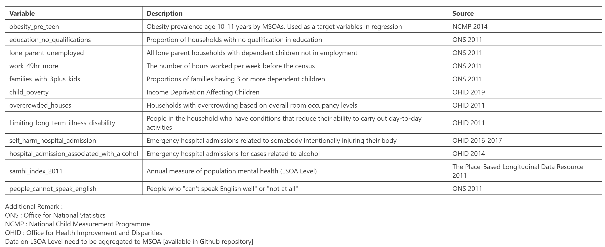
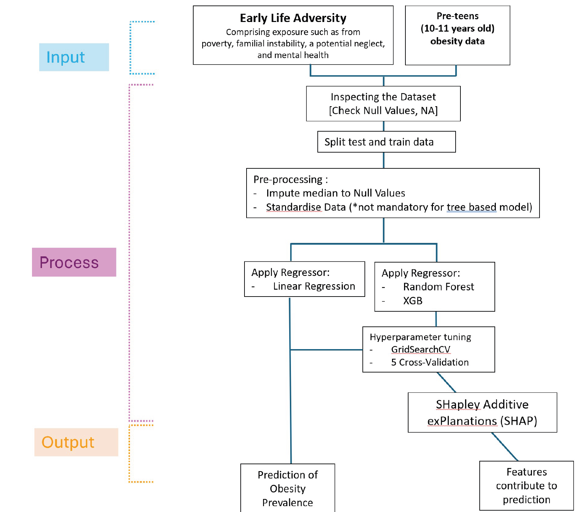
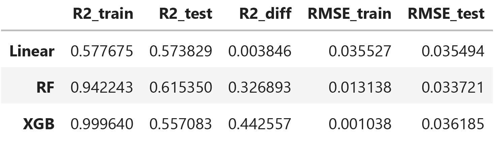
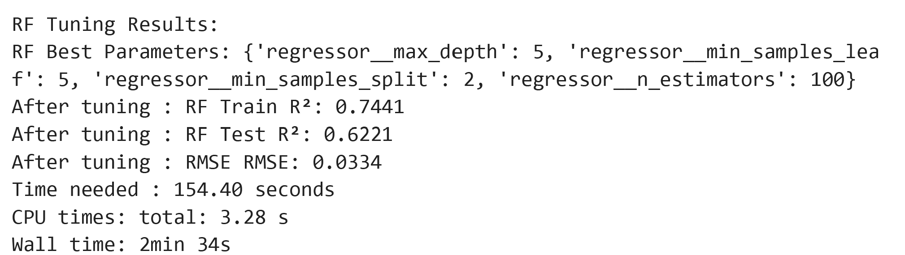
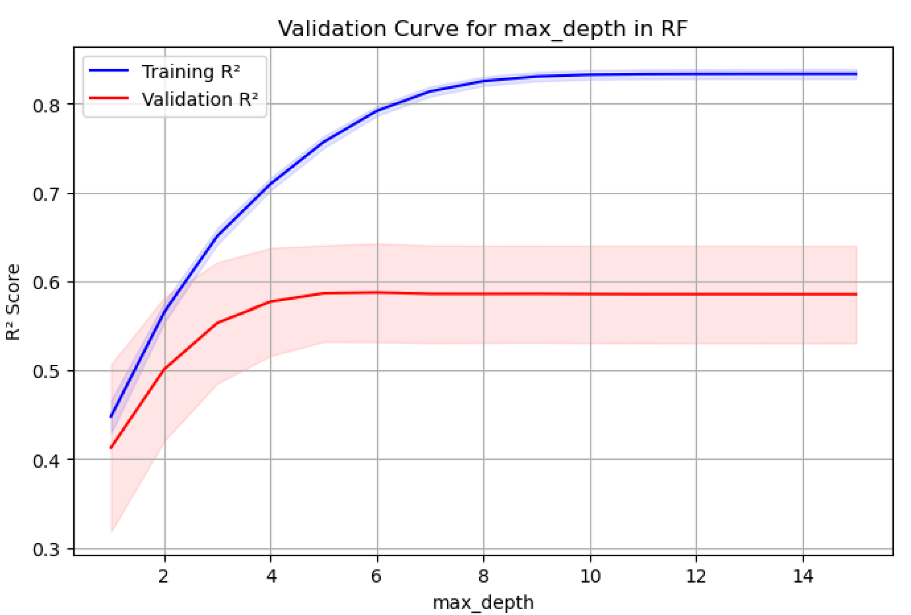
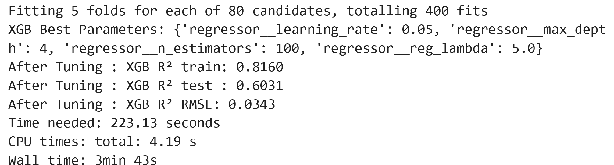
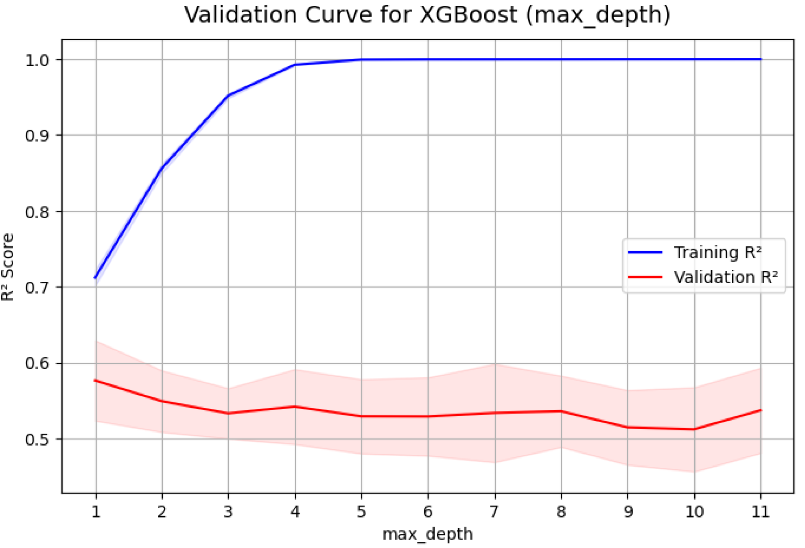
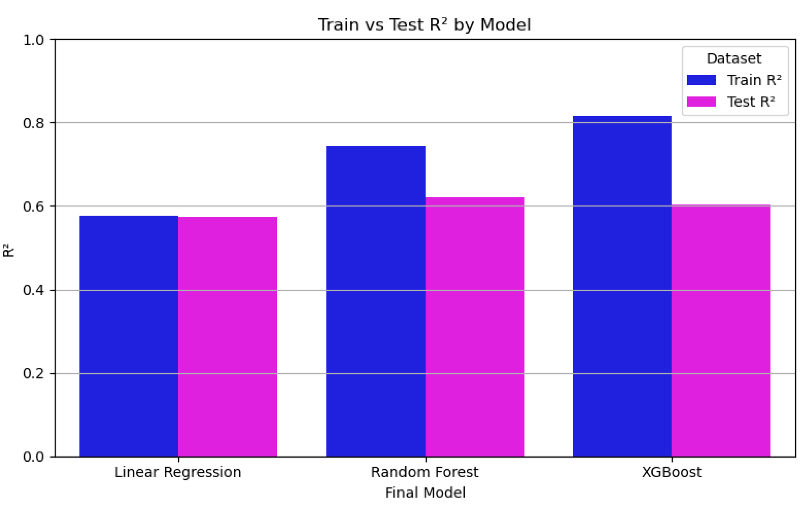
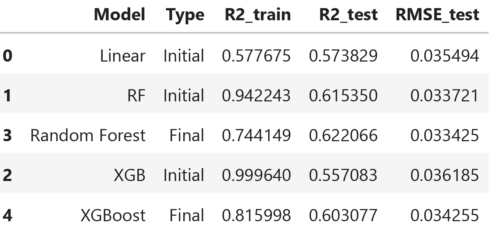
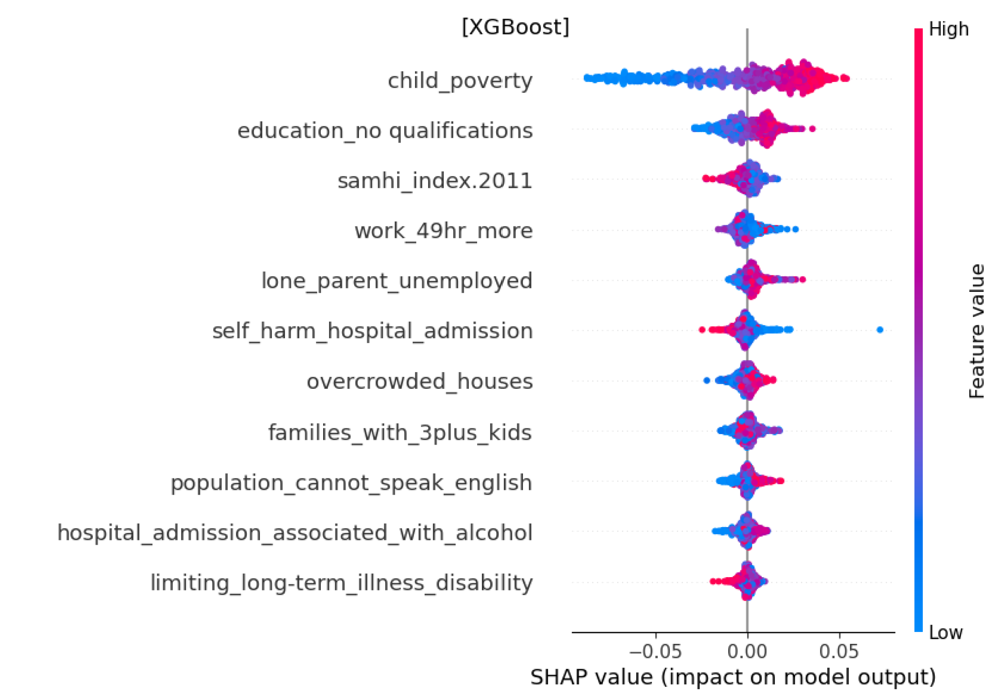

Predicting Obesity Prevalence in London: Using Early Life Adversities
Context
Obesity is major public health concerns and ranked as the fifth leading cause of death worldwide (Safaei et al., 2021). Alarmingly, one in five children is overweight or obese when they start school, and rising to one in three by the end of primary school (House of Commons, 2015). If current trends continue, Britain could become predominantly obese society by 2050 (Butland et al., 2027).
Despite its prevalence, obesity remains preventable through lifestyle changes, nutritional, and policy interventions (De Lorenzo et al., 2020). Addressing obesity is urgent due to its generational cycle: obese children often become obese adults (Simmonds et al., 2016), and obese adults are more likely to have children with higher birth weights, increasing obesity risk (Office for Health Improvement and Disparities, 2022). Since obesity is caused by acomplex factors (Lingvay et al. (2024), looking at different angles might offer valuable insights.
This work aims to explore how early life adversities estimate obesity pravelence, which ground up by findings that repetitive stress could associate with changes in appetite and metabolism (Davis et al., 2014). Pre-teen children (ages 10-11 years) is chosen as they have a higher risk of becoming obese adults compared to preschool children (Ahmad, Ahmad, and Ahmad, 2010). By examining this specific age group, we hope to gain insights into how early life adversity can predict obesity prevalence and identify its key contributing factors.
Question to address
RQ1: How accurately can early life adversities predict obesity prevalence in pre-teen children in London using various predictive machine learning models?
RQ2: How do early life adversities contribute to pree-teen’s obesity prevalence in London?
Dataset

Method
Addressing RQ1, linear regression is applied as it provides a simple, fast baseline forpredicting pre-teen obesity. For better accuracy, advanced models like RandomForest (RF) and XGBoost (XGB) are also applied, following Long et al . (2025)’smethodology on UK’s nutritional-based obesity research, as RF and XGB excel withhigh-dimensional, non-linearity, and predictive performance. Meanwhile, to addressRQ2, this study employs Shapley Additive exPlanations (SHAP) to identify featurescontributing to obesity prevalence. The diagram below presents the overall approach followed in this project, showingeach key task in the order they were performed.

Result
1) Preliminary Result

The results highlight differences in model performance and generalization: Linear Regression generalizes well, but its predictive power is limited by the linearity assumption, which some features violate, as shown in the correlation matrix While Random Forest and XGBoost fit the training data well, they overfit on the test data. Despite this, they outperform Linear Regression in RMSE, with Random Forest performing better than XGBoost.’
2) Hyperparameter tuning and Cross Validation result
As Linear Regression does not have hyperparameters to tune, hyperparameters tuning will be applied to RF and XGB. GridSearchCV with 5-fold cross-validation is used to optimize performance, aiming to reduce test RMSE and improve R² while maintaining simplicity and efficiency.
Random Forest
In RF, the model’s previous overfitting result suggest that the tree might be too deep, thus max_depth is tested from shallow (3) to moderately deep (12), aiming to capture key patterns without fitting irrelevant details. The min_samples_split and min_samples_leaf is also tuned (up to 15) to prevent overly specific splits. Additionally, n_estimator is optimized, as more trees can improve performance.

The model reduces overfitting, boosts R² on test data, and sets max_depth to 5 for better generalization. We will examine this hyperparameter individually using validation curve to identify the point at which increasing it leads to overfitting.

We can see that after max_depth = 5 on validation curve (red), model’s performance on unseen data plateaus, indicating that beyond this point the model likely starting to overfit.
XGBoost
In XGBoost, to optimize model performance, we will vary max_depth to find an optimal depth. The learning_rate will be evaluate to achieve stable adjusted parameter after being iterated. We will also vary n_estimators , as the bigger the number the more stable the model performance. Additionally, reg_lambda will be tested to reduce overfitting by penalize large weights.

After tuning, R² increases, overfitting reduced significantly, and the model identifies a max_depth of 4 for good generalization. We will investigate this using a validation curve.

Despite its slightly fluctuative R² score, the pleateu starts to emerge from the max_depth = 4, suggesting that changing the hyperparameter within that range doesn’t significantly improve generalization performance and may increase the risk of overfitting.
3) Comparison of Each Model


The accuracy of machine learning models in predicting pre-teen obesity prevalence in London using early life adversities varies. Random Forest and XGBoost models show higher R² and lower RMSE compared to the baseline linear regression model. Among advanced models, RF has a better performance than XGBoost, with higher R² (0.622 vs. 0.603), with relatively small prediction errors compared to other models listed (0.0334 vs. 0.0342 and 0.0354), and less overfitting before and after hyperparameter tuning.
Additionally, Random Forest is faster than XGBoost, even with larger folds. However, even with advanced models like Random Forest, early life adversities can only explain 62.2% of the variance in pre-teen obesity prevalence in London. This leaves 37.8% unexplained. This happened as early life adversity associated with central adiposity in 2 ways, a physiological route (metabolic functioning) and psychosocial route (behaviour) (Davis et al., 2014). Meanwhile, the dataset used in this study does not include physiological aspects, only linking potential proxies for psychosocial, which may account for the unexplained variance.
To address RQ2, we will compare feature contributions in the top models, Random Forest and XGBoost, using a SHAP beeswarm plot.


The Random Forest and XGBoost models consistently highlight child poverty, lackof educational qualifications, and mental health index as key contributing factors topre-teen obesity prevalence, underscoring their universal importance. This alignswith Kimbro and Denney ( 2013) which linked obesity with higher poverty level andlow education.
The third-ranked mental health index further emphasizes the needfor integrating mental health to obesity interventions. The models diverge in their fourth and fifth rankings: RF places families with 3+children fourth and those working 49+ hours per week fifth, while XGB ranksworking 49+ hours fourth and lone parent unemployment fifth. RF highlightsresource strain in larger households and time strain potentially limiting healthymeal preparation or child supervision, while XGB points to struggles in single-parent households and overtime working (49+ hours exceeds the UK Working TimeDirective).
These findings suggests that obesity interventions may benefit from incorporatingat-risk populations with childhood adversities, as well as evaluating supportschemes for work-life balance, unemployed single parents, and large households
Conclusion
- The Random Forest model outperforms XGBoost and Linear Regression in predicting pre-teen obesity prevalence with higher R² and lower RMSE.
- Both the Random Forest and XGBoost models consistently identify child poverty, limited educational qualifications, and mental health issues as major contributing factors to pre-teen obesity prevalence in London
Reflection
- Performing linear regression on several X indicators, means that we need to check the multiple linear regression assumptions such as multicollinearity etc.